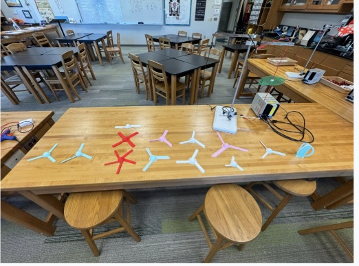

Wind Turbine Aerodynamic Optimization & Independent Study
Designing, building, and testing a low-cost, high-efficiency micro wind generator.

Electromechanical Hardware Design
Designed a custom prototype turbine that repurposed direct-drive brushless hoverboard motors as 3-phase AC generators. Constructed custom weatherized PVC nacelle housing, rotor hubs, and low-friction bearing assemblies.
Hoverboard Motor Conversion
Custom Machined Hub
Weather Isolation

Aerodynamic Testing & Power Output
Generated 15–20 W of continuous power under controlled wind speed conditions. Measured output across various blade airfoil pitches and rotor diameters to compile voltage, current, and power efficiency curves.
Authored a comprehensive 30-page research paper detailing lift-to-drag optimization and Betz Limit efficiencies for micro turbines.
15-20W Continuous Power
Betz Limit Analysis
30-Page Research Thesis